pacman::p_load(sf, tmap, tidyverse)Hands-on_Ex09
Getting started
A choropleth map uses colour shading to represent the spatial distribution of data values across geographic areas. The main R package being used is tmap. Along with that, 4 other packages will be used which are readr, tidyr, dplyr and sf.
Two data set will be used to create the choropleth map. They are:
Master Plan 2014 Subzone Boundary (Web) (i.e. MP14_SUBZONE_WEB_PL) in ESRI shapefile format. It can be downloaded at data.gov.sg This is a geospatial data. It consists of the geographical boundary of Singapore at the planning subzone level. The data is based on URA Master Plan 2014.
Singapore Residents by Planning Area / Subzone, Age Group, Sex and Type of Dwelling, June 2011-2020 in csv format (i.e. respopagesextod2011to2020.csv). This is an aspatial data fie. It can be downloaded at Department of Statistics, Singapore Although it does not contain any coordinates values, but it’s PA and SZ fields can be used as unique identifiers to geocode to MP14_SUBZONE_WEB_PL shapefile.
Importing data into R
mpsz <- st_read(dsn = "data",
layer = "MP14_SUBZONE_WEB_PL")Reading layer `MP14_SUBZONE_WEB_PL' from data source
`C:\Epersis\ISSS608-VAA\Hands-on_Ex\Hands-on_Ex09\data' using driver `ESRI Shapefile'
Simple feature collection with 323 features and 15 fields
Geometry type: MULTIPOLYGON
Dimension: XY
Bounding box: xmin: 2667.538 ymin: 15748.72 xmax: 56396.44 ymax: 50256.33
Projected CRS: SVY21examine contents of data
Simple feature collection with 323 features and 15 fields
Geometry type: MULTIPOLYGON
Dimension: XY
Bounding box: xmin: 2667.538 ymin: 15748.72 xmax: 56396.44 ymax: 50256.33
Projected CRS: SVY21
First 10 features:
OBJECTID SUBZONE_NO SUBZONE_N SUBZONE_C CA_IND PLN_AREA_N
1 1 1 MARINA SOUTH MSSZ01 Y MARINA SOUTH
2 2 1 PEARL'S HILL OTSZ01 Y OUTRAM
3 3 3 BOAT QUAY SRSZ03 Y SINGAPORE RIVER
4 4 8 HENDERSON HILL BMSZ08 N BUKIT MERAH
5 5 3 REDHILL BMSZ03 N BUKIT MERAH
6 6 7 ALEXANDRA HILL BMSZ07 N BUKIT MERAH
7 7 9 BUKIT HO SWEE BMSZ09 N BUKIT MERAH
8 8 2 CLARKE QUAY SRSZ02 Y SINGAPORE RIVER
9 9 13 PASIR PANJANG 1 QTSZ13 N QUEENSTOWN
10 10 7 QUEENSWAY QTSZ07 N QUEENSTOWN
PLN_AREA_C REGION_N REGION_C INC_CRC FMEL_UPD_D X_ADDR
1 MS CENTRAL REGION CR 5ED7EB253F99252E 2014-12-05 31595.84
2 OT CENTRAL REGION CR 8C7149B9EB32EEFC 2014-12-05 28679.06
3 SR CENTRAL REGION CR C35FEFF02B13E0E5 2014-12-05 29654.96
4 BM CENTRAL REGION CR 3775D82C5DDBEFBD 2014-12-05 26782.83
5 BM CENTRAL REGION CR 85D9ABEF0A40678F 2014-12-05 26201.96
6 BM CENTRAL REGION CR 9D286521EF5E3B59 2014-12-05 25358.82
7 BM CENTRAL REGION CR 7839A8577144EFE2 2014-12-05 27680.06
8 SR CENTRAL REGION CR 48661DC0FBA09F7A 2014-12-05 29253.21
9 QT CENTRAL REGION CR 1F721290C421BFAB 2014-12-05 22077.34
10 QT CENTRAL REGION CR 3580D2AFFBEE914C 2014-12-05 24168.31
Y_ADDR SHAPE_Leng SHAPE_Area geometry
1 29220.19 5267.381 1630379.3 MULTIPOLYGON (((31495.56 30...
2 29782.05 3506.107 559816.2 MULTIPOLYGON (((29092.28 30...
3 29974.66 1740.926 160807.5 MULTIPOLYGON (((29932.33 29...
4 29933.77 3313.625 595428.9 MULTIPOLYGON (((27131.28 30...
5 30005.70 2825.594 387429.4 MULTIPOLYGON (((26451.03 30...
6 29991.38 4428.913 1030378.8 MULTIPOLYGON (((25899.7 297...
7 30230.86 3275.312 551732.0 MULTIPOLYGON (((27746.95 30...
8 30222.86 2208.619 290184.7 MULTIPOLYGON (((29351.26 29...
9 29893.78 6571.323 1084792.3 MULTIPOLYGON (((20996.49 30...
10 30104.18 3454.239 631644.3 MULTIPOLYGON (((24472.11 29...mpszImporting attribute data into R
popdata <- read_csv("data/respopagesextod2011to2020.csv")Data preparation
Before a thematic map can be prepared, you are required to prepare a data table with year 2020 values. YOUNG: age group 0 to 4 until age groyup 20 to 24, ECONOMY ACTIVE: age group 25-29 until age group 60-64, AGED: age group 65 and above, TOTAL: all age group, and DEPENDENCY: the ratio between young and aged against economy active group
Data wrangling
popdata2020 <- popdata %>%
filter(Time == 2020) %>%
group_by(PA, SZ, AG) %>%
summarise(`POP` = sum(`Pop`)) %>%
ungroup() %>%
pivot_wider(names_from=AG,
values_from=POP) %>%
mutate(YOUNG = rowSums(.[3:6])
+rowSums(.[12])) %>%
mutate(`ECONOMY ACTIVE` = rowSums(.[7:11])+
rowSums(.[13:15]))%>%
mutate(`AGED`=rowSums(.[16:21])) %>%
mutate(`TOTAL`=rowSums(.[3:21])) %>%
mutate(`DEPENDENCY` = (`YOUNG` + `AGED`)
/`ECONOMY ACTIVE`) %>%
select(`PA`, `SZ`, `YOUNG`,
`ECONOMY ACTIVE`, `AGED`,
`TOTAL`, `DEPENDENCY`)Joining attribute data and geospatial data
popdata2020 <- popdata2020 %>%
mutate(across(c(PA, SZ), toupper)) %>%
filter(`ECONOMY ACTIVE` > 0)Next, left_join() of dplyr is used to join the geographical data and attribute table using planning subzone name e.g. SUBZONE_N and SZ as the common identifier.
mpsz_pop2020 <- left_join(mpsz, popdata2020,
by = c("SUBZONE_N" = "SZ"))dir.create("data/rds", recursive = TRUE, showWarnings = FALSE)
write_rds(mpsz_pop2020, "data/rds/mpszpop2020.rds")Chloropleth mapping geospatial data using tmap
There are 2 approaches which can be used to prepare thematic map using tmap, they are:
Plotting a thematic map quickly by using qtm().
Plotting highly customisable thematic map by using tmap elements.
Plotting a chloropleth map quickly using qtm()

tmap_mode("plot")
qtm(mpsz_pop2020,
fill = "DEPENDENCY")Learning points:
tmap_mode() with “plot” option is used to produce a static map. For interactive mode, “view” option should be used.
fill argument is used to map the attribute (i.e. DEPENDENCY)
Creating a choropleth map by using tmap’s elements
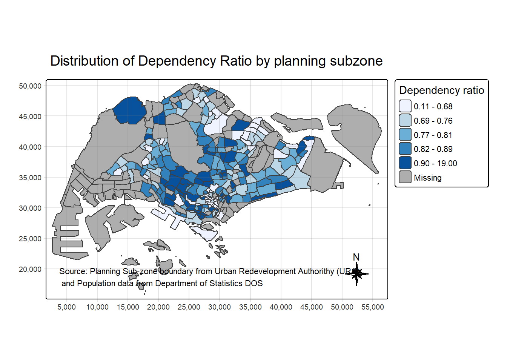
tm_shape(mpsz_pop2020)+
tm_polygons(fill = "DEPENDENCY",
fill.scale = tm_scale_intervals(
style = "quantile",
n = 5,
values = "brewer.blues"),
fill.legend = tm_legend(
title = "Dependency ratio")) +
tm_title("Distribution of Dependency Ratio by planning subzone") +
tm_layout(frame = TRUE) +
tm_borders(fill_alpha = 0.5) +
tm_compass(type="8star", size = 2) +
tm_grid(alpha =0.2) +
tm_credits("Source: Planning Sub-zone boundary from Urban Redevelopment Authorithy (URA)\n and Population data from Department of Statistics DOS",
position = c("left", "bottom"))Drawing a base map
The basic building block of tmap is tm_shape() followed by one or more layer elemments such as tm_fill() and tm_polygons().
In the code chunk below, tm_shape() is used to define the input data (i.e mpsz_pop2020) and tm_polygons() is used to draw the planning subzone polygons

tm_shape(mpsz_pop2020) +
tm_polygons()Drawing a choropleth map using tm_polygons()
To draw a choropleth map showing the geographical distribution of a selected variable by planning subzone, we just need to assign the target variable such as Dependency to tm_polygons().

tm_shape(mpsz_pop2020)+
tm_polygons("DEPENDENCY")Learning pointers:
The default interval binning used to draw the choropleth map is called “pretty”.
The default colour scheme used is YlOrRd of ColorBrewer.
By default, Missing value will be shaded in grey.
Drawing a choropleth map using tm_fill() and tm_border()
Actually, tm_polygons() is a wraper of tm_fill() and tm_border(). tm_fill() shades the polygons by using the default colour scheme and tm_borders() adds the borders of the shapefile onto the choropleth map.

tm_shape(mpsz_pop2020)+
tm_fill("DEPENDENCY")Notice that the planning subzones are shared according to the respective dependecy values
To add the boundary of the planning subzones, tm_borders will be used as shown in the code chunk below.

tm_shape(mpsz_pop2020)+
tm_polygons(fill = "DEPENDENCY") +
tm_borders(lwd = 0.01,
fill_alpha = 0.1)Notice that light-gray border lines have been added on the choropleth map.
The alpha argument is used to define transparency number between 0 (totally transparent) and 1 (not transparent). By default, the alpha value of the col is used (normally 1).
Data classification methods of tmap
Choropleth maps use data classification to group many observations into a smaller number of value ranges or classes for easier interpretation.
tmap supports 10 classification methods (e.g., pretty, quantile, equal, jenks), which can be specified using the style argument in tm_fill() or tm_polygons().
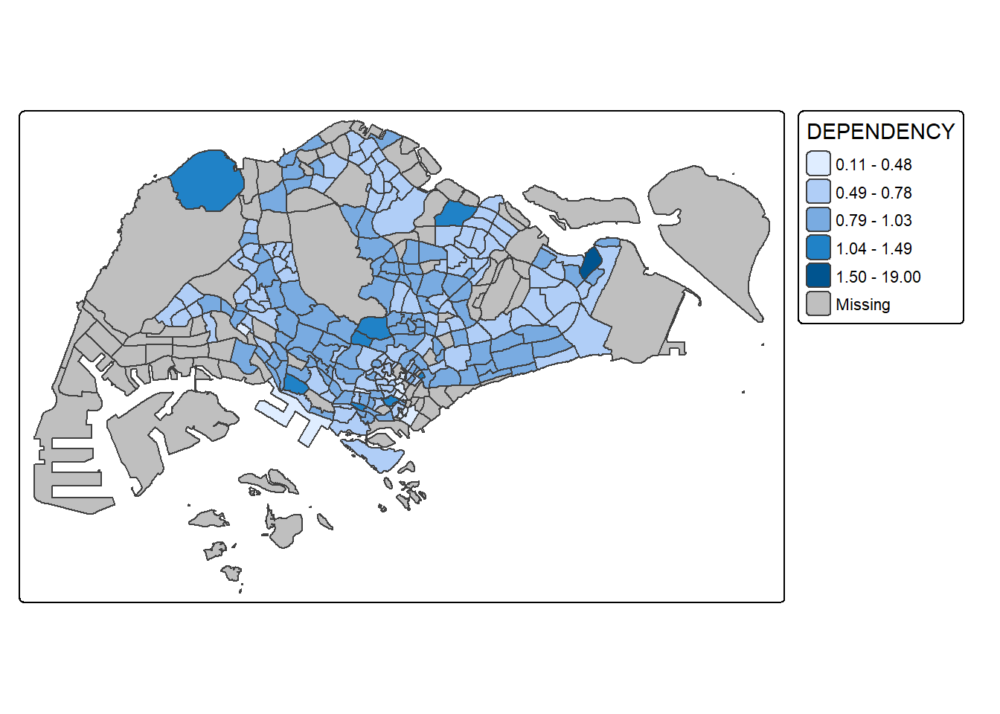
tm_shape(mpsz_pop2020)+
tm_polygons("DEPENDENCY",
fill.scale = tm_scale_intervals(
style = "jenks",
n = 5)) +
tm_borders(fill_alpha = 0.5)Plotting choropleth maps with built-in classification methods

tm_shape(mpsz_pop2020)+
tm_polygons("DEPENDENCY",
fill.scale = tm_scale_intervals(
style = "jenks",
n = 5)) +
tm_borders(fill_alpha = 0.5)
tm_shape(mpsz_pop2020)+
tm_polygons("DEPENDENCY",
fill.scale = tm_scale_intervals(
style = "equal",
n = 5)) +
tm_borders(fill_alpha = 0.5)DIY
Using what you had learned, prepare choropleth maps by using different classification methods supported by tmap and compare their differences.
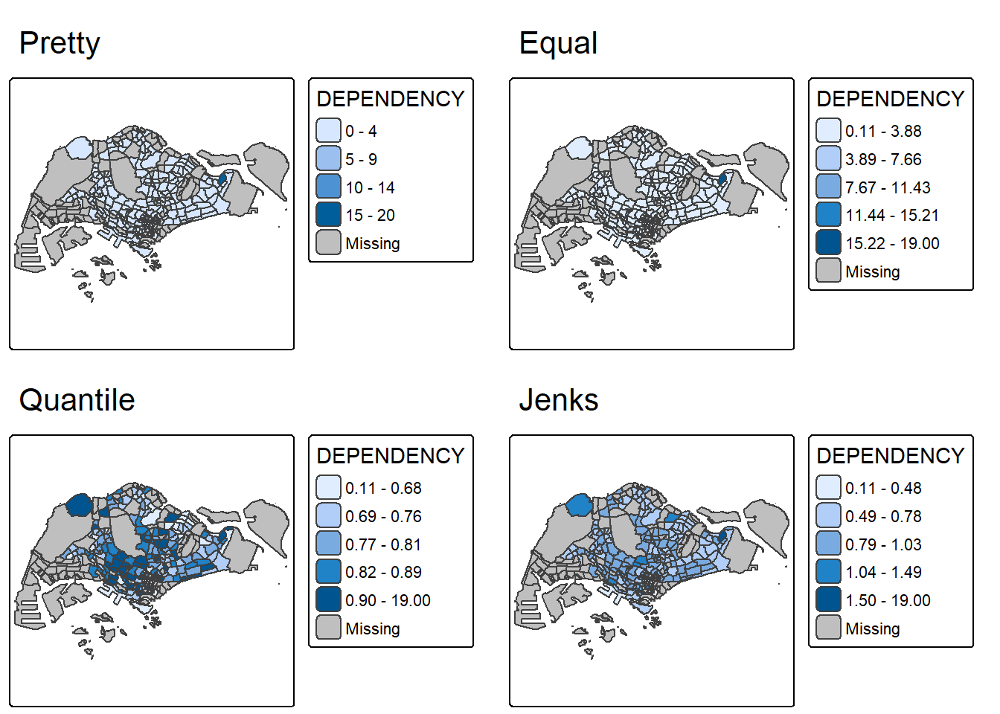
methods <- c("pretty", "equal", "quantile", "jenks")
tmap_arrange(
tm_shape(mpsz_pop2020) +
tm_polygons("DEPENDENCY",
fill.scale = tm_scale_intervals(style = "pretty", n = 5)) +
tm_borders(fill_alpha = 0.5) +
tm_title("Pretty"),
tm_shape(mpsz_pop2020) +
tm_polygons("DEPENDENCY",
fill.scale = tm_scale_intervals(style = "equal", n = 5)) +
tm_borders(fill_alpha = 0.5) +
tm_title("Equal"),
tm_shape(mpsz_pop2020) +
tm_polygons("DEPENDENCY",
fill.scale = tm_scale_intervals(style = "quantile", n = 5)) +
tm_borders(fill_alpha = 0.5) +
tm_title("Quantile"),
tm_shape(mpsz_pop2020) +
tm_polygons("DEPENDENCY",
fill.scale = tm_scale_intervals(style = "jenks", n = 5)) +
tm_borders(fill_alpha = 0.5) +
tm_title("Jenks"),
ncol = 2
)DIY
Preparing choropleth maps by using similar classification method but with different numbers of classes (i.e. 2, 6, 10, 20). Compare the output maps, what observation can you draw?
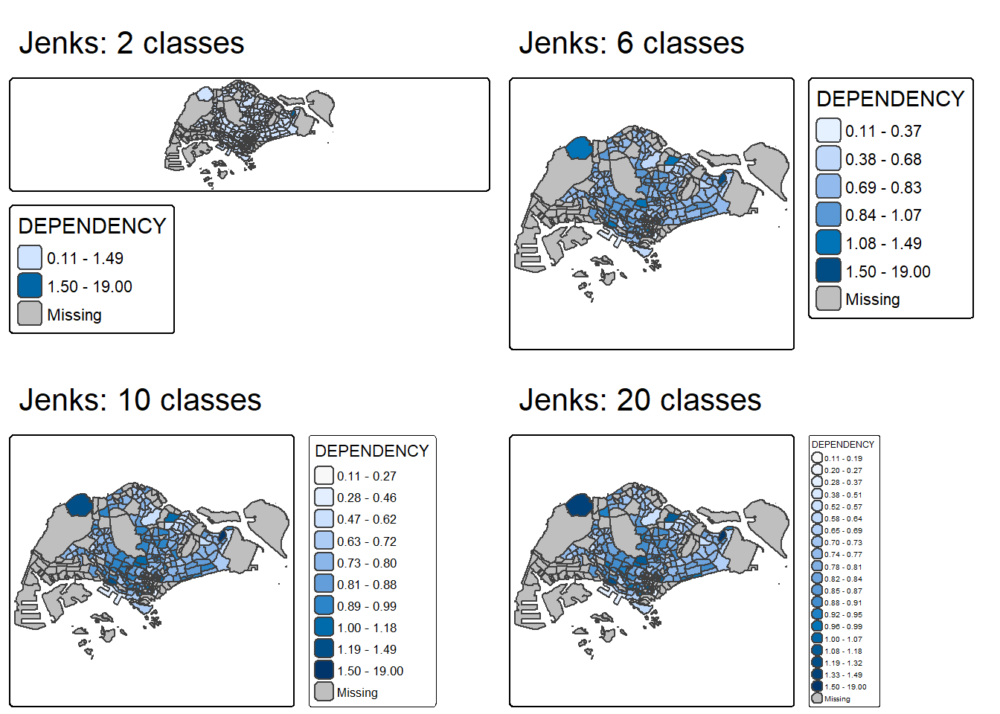
tmap_arrange(
tm_shape(mpsz_pop2020) +
tm_polygons("DEPENDENCY",
fill.scale = tm_scale_intervals(style = "jenks", n = 2)) +
tm_borders(fill_alpha = 0.5) +
tm_title("Jenks: 2 classes"),
tm_shape(mpsz_pop2020) +
tm_polygons("DEPENDENCY",
fill.scale = tm_scale_intervals(style = "jenks", n = 6)) +
tm_borders(fill_alpha = 0.5) +
tm_title("Jenks: 6 classes"),
tm_shape(mpsz_pop2020) +
tm_polygons("DEPENDENCY",
fill.scale = tm_scale_intervals(style = "jenks", n = 10)) +
tm_borders(fill_alpha = 0.5) +
tm_title("Jenks: 10 classes"),
tm_shape(mpsz_pop2020) +
tm_polygons("DEPENDENCY",
fill.scale = tm_scale_intervals(style = "jenks", n = 20)) +
tm_borders(fill_alpha = 0.5) +
tm_title("Jenks: 20 classes"),
ncol = 2
)Plotting choropleth map with custome break
tmap allows custom class intervals by specifying breakpoints manually using the breaks argument in tm_fill() or tm_polygons(). To create n classes, n+1 break values must be provided, including the minimum and maximum values. Before defining custom breaks, it is good practice to examine the descriptive statistics of the variable to understand its distribution.
summary(mpsz_pop2020$DEPENDENCY) Min. 1st Qu. Median Mean 3rd Qu. Max. NA's
0.1111 0.7147 0.7867 0.8585 0.8763 19.0000 92 With reference to the results above, we set break point at 0.60, 0.70, 0.80, and 0.90. In addition, we also need to include a minimum and maximum, which we set at 0 and 100. Our breaks vector is thus c(0, 0.60, 0.70, 0.80, 0.90, 1.00)

tm_shape(mpsz_pop2020)+
tm_polygons("DEPENDENCY",
breaks = c(0, 0.60, 0.70, 0.80, 0.90, 1.00)) +
tm_borders(fill_alpha = 0.5)Colour Scheme
tmap supports colour ramps either defined by the user or a set of predefined colour ramps from the RColorBrewer package.
Using colourBrewer palette
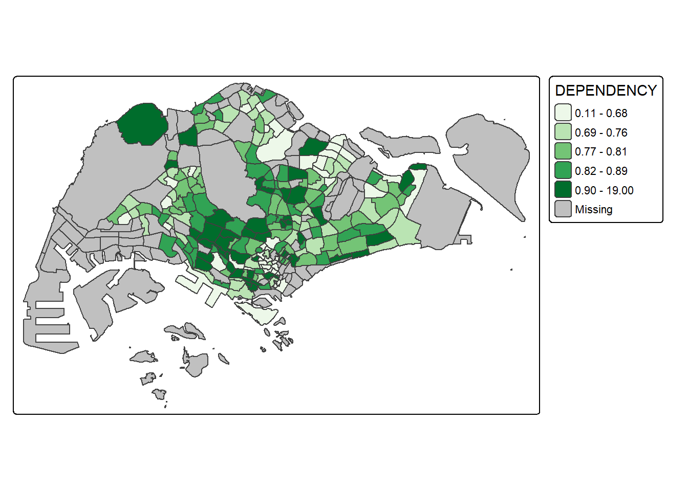
tm_shape(mpsz_pop2020)+
tm_polygons("DEPENDENCY",
fill.scale = tm_scale_intervals(
style = "quantile",
n = 5,
values = "brewer.greens")) +
tm_borders(fill_alpha = 0.5)To reverse the colour shaing, add a “-” prefix.

tm_shape(mpsz_pop2020)+
tm_polygons("DEPENDENCY",
fill.scale = tm_scale_intervals(
style = "quantile",
n = 5,
values = "-brewer.greens")) +
tm_borders(fill_alpha = 0.5)Map layouts
Map layout refers to the arrangement of map elements such as the map itself, title, scale bar, compass, margins, and aspect ratio into a cohesive visualization. These elements, together with colour schemes and classification methods, influence the overall appearance and readability of the map.
Map legend
In tmap, several tm_legend() options are provided to change the placement, format and appearance of the legend.

tm_shape(mpsz_pop2020)+
tm_polygons("DEPENDENCY",
fill.scale = tm_scale_intervals(
style = "jenks",
n = 5,
values = "brewer.greens"),
fill.legend = tm_legend(
title = "Dependency ratio")) +
tm_borders(fill_alpha = 0.5) +
tm_title("Distribution of Dependency Ratio by planning subzone \n(Jenks classification)")Map style
tmap allows a wide variety of layout settings to be changed. They can be called by using tmap_style().
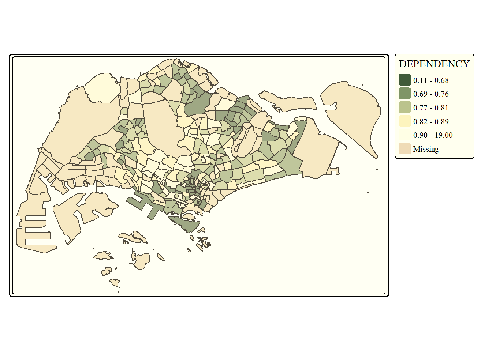
tm_shape(mpsz_pop2020)+
tm_fill("DEPENDENCY",
style = "quantile",
palette = "-Greens") +
tm_borders(alpha = 0.5) +
tmap_style("classic")Cartographic furniture
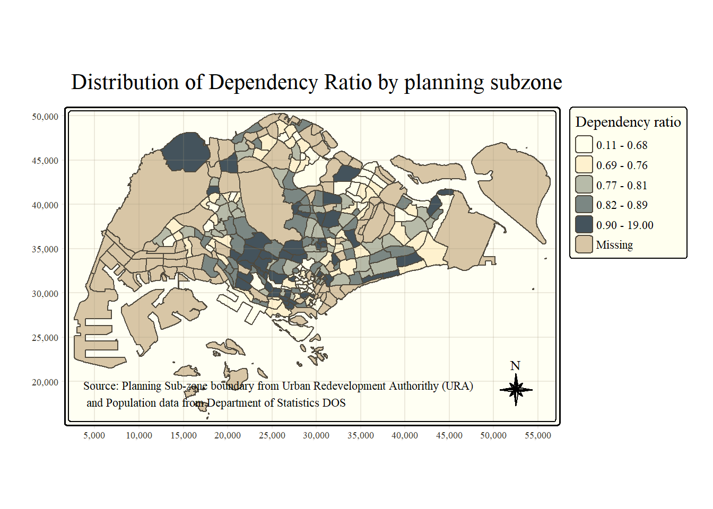
tm_shape(mpsz_pop2020)+
tm_polygons(fill = "DEPENDENCY",
fill.scale = tm_scale_intervals(
style = "quantile",
n = 5,
values = "brewer.blues"),
fill.legend = tm_legend(
title = "Dependency ratio")) +
tm_title("Distribution of Dependency Ratio by planning subzone") +
tm_layout(frame = TRUE) +
tm_borders(fill_alpha = 0.5) +
tm_compass(type="8star", size = 2) +
tm_grid(alpha =0.2) +
tm_credits("Source: Planning Sub-zone boundary from Urban Redevelopment Authorithy (URA)\n and Population data from Department of Statistics DOS",
position = c("left", "bottom"))Drawing Small Multiple Choropleth Maps
Small multiple (facet) maps display multiple maps side by side or stacked to compare spatial patterns across another variable, such as time. In tmap, they can be created using multiple aesthetic values, tm_facets(), or tmap_arrange().
By assigning multiple values to at least one of the aesthetic arguments
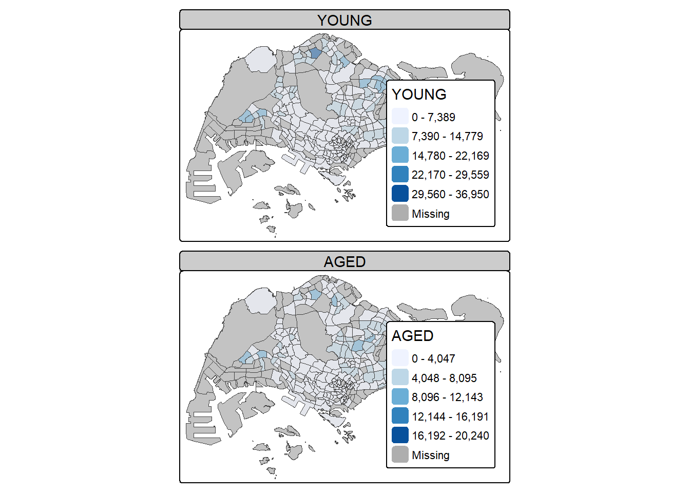
tm_shape(mpsz_pop2020)+
tm_fill(c("YOUNG", "AGED"),
style = "equal",
palette = "Blues") +
tm_layout(legend.position = c("right", "bottom")) +
tm_borders(alpha = 0.5) +
tmap_style("white")In this example, small multiple choropleth maps are created by assigning multiple values to at least one of the aesthetic arguments.

tm_shape(mpsz_pop2020)+
tm_polygons(c("DEPENDENCY","AGED"),
style = c("equal", "quantile"),
palette = list("Blues","Greens")) +
tm_layout(legend.position = c("right", "bottom"))By defining a group-by variable in tm_facets()

tm_shape(mpsz_pop2020) +
tm_fill("DEPENDENCY",
style = "quantile",
palette = "Blues",
thres.poly = 0) +
tm_facets(by="REGION_N",
free.coords=TRUE) +
tm_layout(legend.show = FALSE,
title.position = c("center", "center"),
title.size = 20) +
tm_borders(alpha = 0.5)By creating multiple stand-alone maps with tmap_arrange()

youngmap <- tm_shape(mpsz_pop2020)+
tm_polygons("YOUNG",
style = "quantile",
palette = "Blues")
agedmap <- tm_shape(mpsz_pop2020)+
tm_polygons("AGED",
style = "quantile",
palette = "Blues")
tmap_arrange(youngmap, agedmap, asp=1, ncol=2)Mapping Spatial Object Meeting a Selection Criterion
Instead of creating small multiple choropleth map, you can also use selection funtion to map spatial objects meeting the selection criterion.

tm_shape(mpsz_pop2020[mpsz_pop2020$REGION_N=="CENTRAL REGION", ])+
tm_fill("DEPENDENCY",
style = "quantile",
palette = "Blues",
legend.hist = TRUE,
legend.is.portrait = TRUE,
legend.hist.z = 0.1) +
tm_layout(legend.outside = TRUE,
legend.height = 0.45,
legend.width = 5.0,
legend.position = c("right", "bottom"),
frame = FALSE) +
tm_borders(alpha = 0.5)Alternatives
Chloropleth map
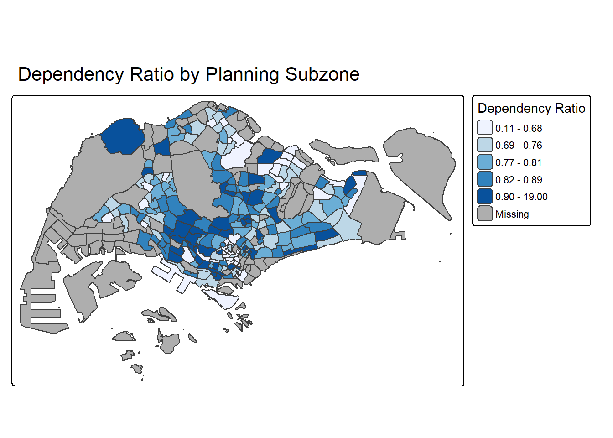
tm_shape(mpsz_pop2020) +
tm_polygons(
fill = "DEPENDENCY",
fill.scale = tm_scale_intervals(
style = "quantile",
n = 5,
values = "brewer.blues"
),
fill.legend = tm_legend(title = "Dependency Ratio")
) +
tm_borders(fill_alpha = 0.4) +
tm_title("Dependency Ratio by Planning Subzone")Jenks classification map
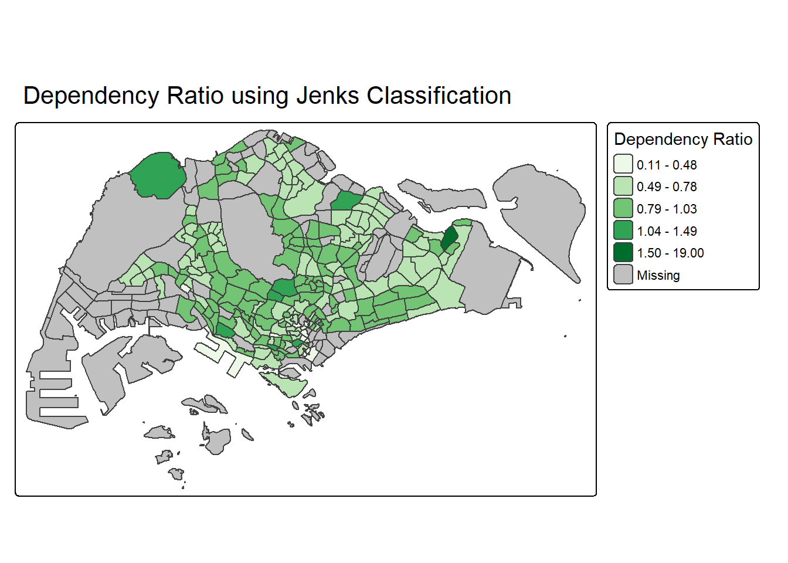
tm_shape(mpsz_pop2020) +
tm_polygons(
fill = "DEPENDENCY",
fill.scale = tm_scale_intervals(
style = "jenks",
n = 5,
values = "brewer.greens"
),
fill.legend = tm_legend(title = "Dependency Ratio")
) +
tm_borders(lwd = 0.2, fill_alpha = 0.5) +
tm_title("Dependency Ratio using Jenks Classification")Custom chloropleth map
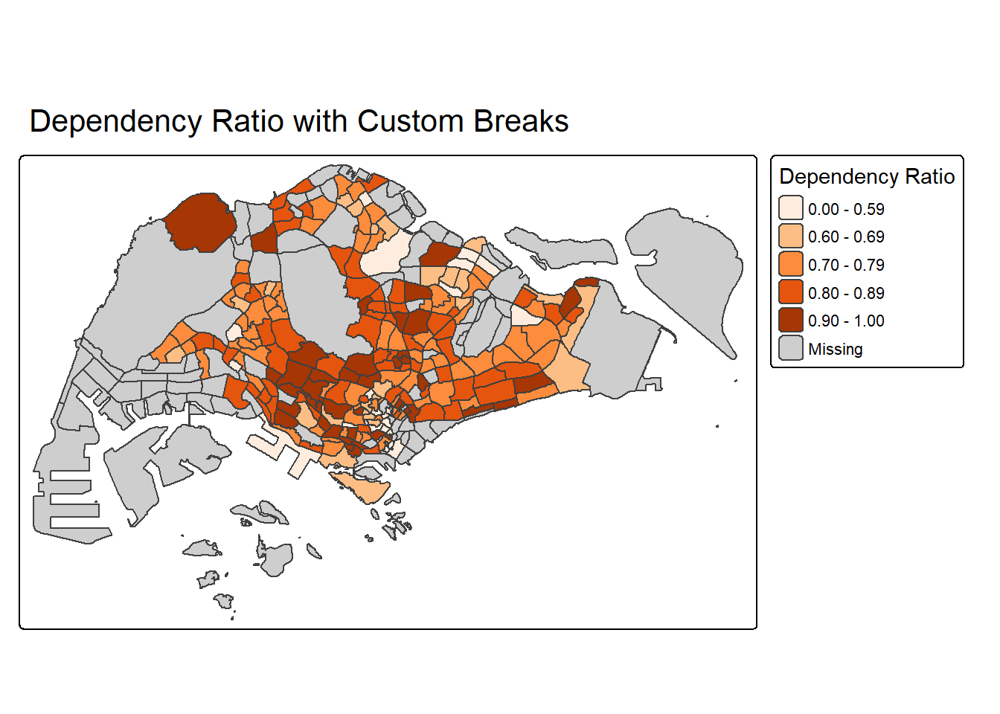
tm_shape(mpsz_pop2020) +
tm_polygons(
fill = "DEPENDENCY",
fill.scale = tm_scale_intervals(
breaks = c(0, 0.60, 0.70, 0.80, 0.90, 1.00),
values = "brewer.oranges"
),
fill.legend = tm_legend(title = "Dependency Ratio")
) +
tm_borders(fill_alpha = 0.4) +
tm_title("Dependency Ratio with Custom Breaks")Comparing population groups
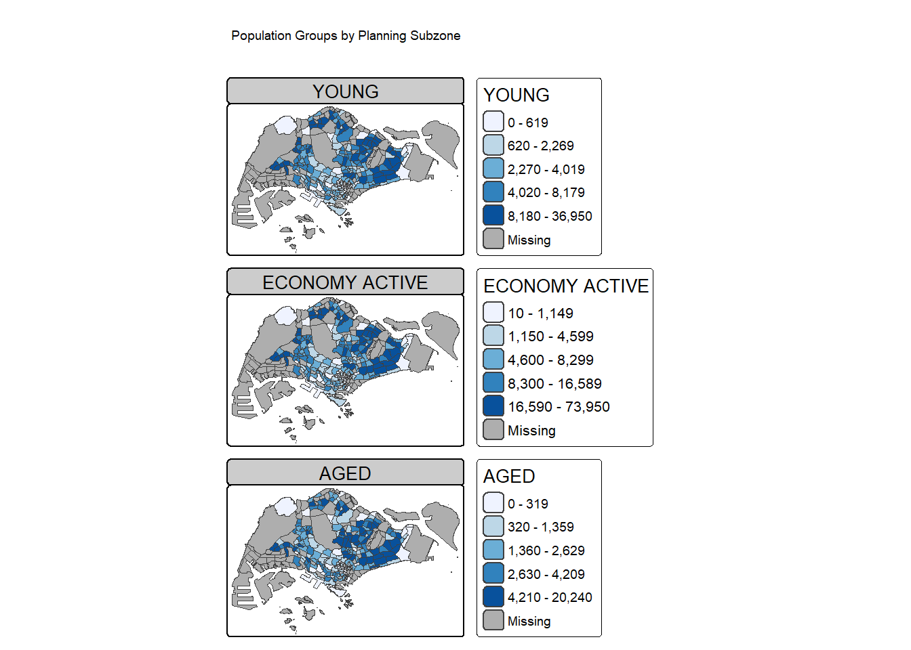
tm_shape(mpsz_pop2020) +
tm_polygons(
fill = c("YOUNG", "ECONOMY ACTIVE", "AGED"),
fill.scale = tm_scale_intervals(
style = "quantile",
n = 5,
values = "brewer.blues"
)
) +
tm_borders(fill_alpha = 0.4) +
tm_title("Population Groups by Planning Subzone")Regional facet chloropleth map
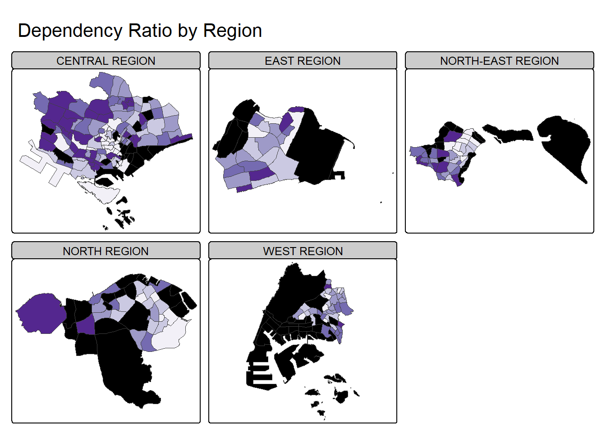
tm_shape(mpsz_pop2020) +
tm_polygons(
fill = "DEPENDENCY",
fill.scale = tm_scale_intervals(
style = "quantile",
n = 5,
values = "brewer.purples"
),
fill.legend = tm_legend(title = "Dependency Ratio")
) +
tm_facets(by = "REGION_N", free.coords = TRUE) +
tm_borders(fill_alpha = 0.4) +
tm_layout(legend.show = FALSE) +
tm_title("Dependency Ratio by Region")